UX Case Study · Solo Project · 2022
Designing a responsive health & fitness diary for self-directed individuals who train without a coach.
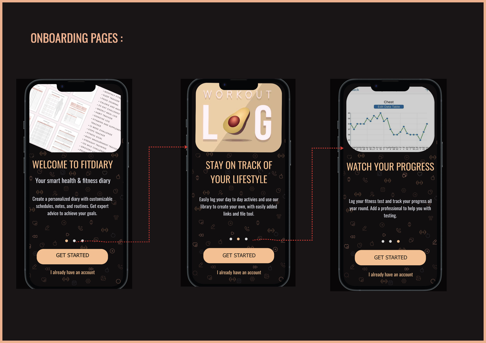
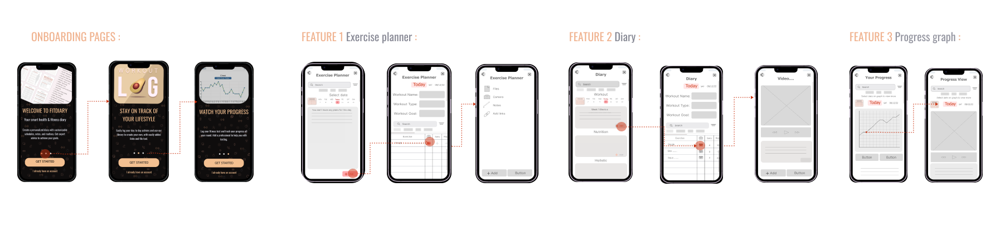
Most fitness apps are built around coaches, pre-set programmes, or data tracking — leaving a significant gap for self-directed users who simply want to log their own training in their own way.
"Existing apps suffer from information overload, poor legibility, and no diary-like feature for individuals without a coach."
FitDiary addresses this directly — a responsive app that lets busy, self-motivated individuals track, record, and plan their own training, then review past sessions to monitor progress over time.
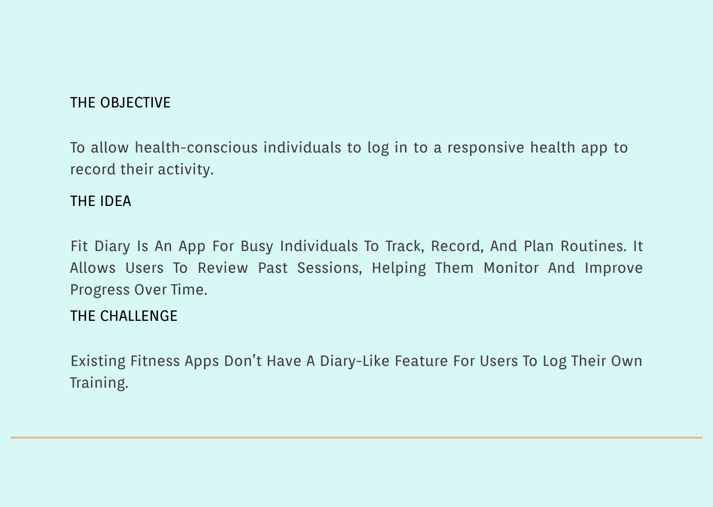
The Objective, Idea and Challenge — the three pillars that shaped FitDiary
To avoid designing based on assumptions, I began with a competitive analysis of existing apps — including a detailed heuristic audit of TrueCoach — followed by 5 user interviews with people aged 18–60 who exercise regularly.
Competitor pain points identified:
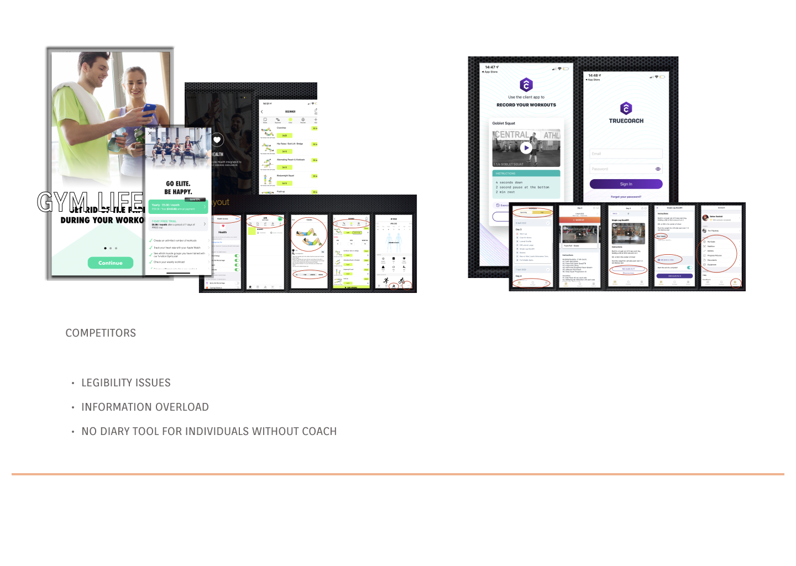
Competitor analysis — GymLife and TrueCoach
"It's hard to find past notes — takes time to look through them. I forget to look at my notes."— Research participant, age 30
Findings were synthesised on Miro into an affinity map, grouping insights into three categories: Behaviours & Attitudes, Needs & Goals, and Frustrations & Problems.
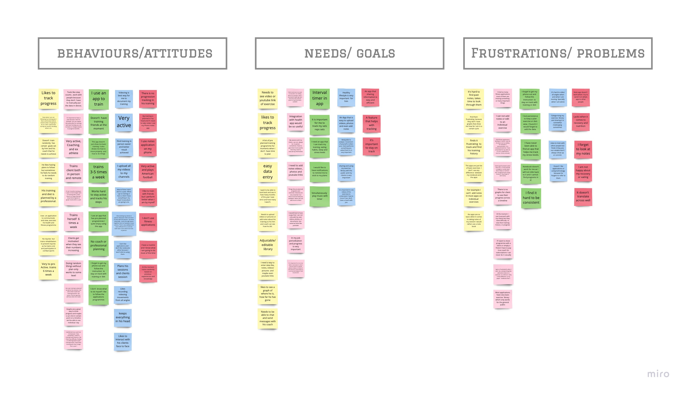
Affinity map — behaviours, needs and frustrations from user interviews
Research findings were distilled into five distinct personas — representing the real breadth of self-directed fitness enthusiasts, not a single stereotype.
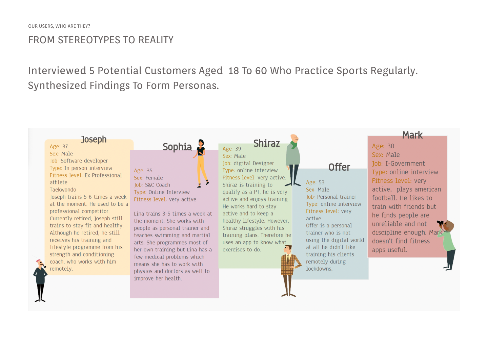
From Stereotypes to Reality — 5 user personas
With user needs defined, the full app structure was mapped in a sitemap across four core sections: Diary, Our Programmes, Find a Professional, and Profile.
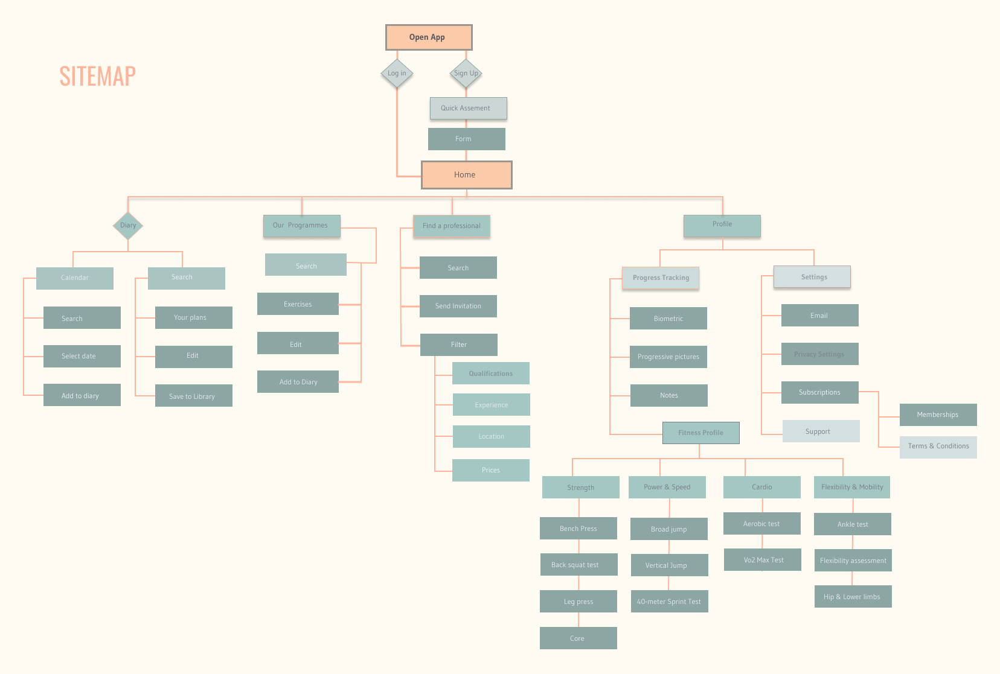
Information architecture — sitemap
The design moved through five distinct fidelity stages — each one validating the previous before adding more resolution. Mobile and web were designed in parallel from day one.
Key decision: onboarding uses a 3-screen swipe tutorial to communicate the app's core value before asking users to sign up — solving the cold start problem found in research.
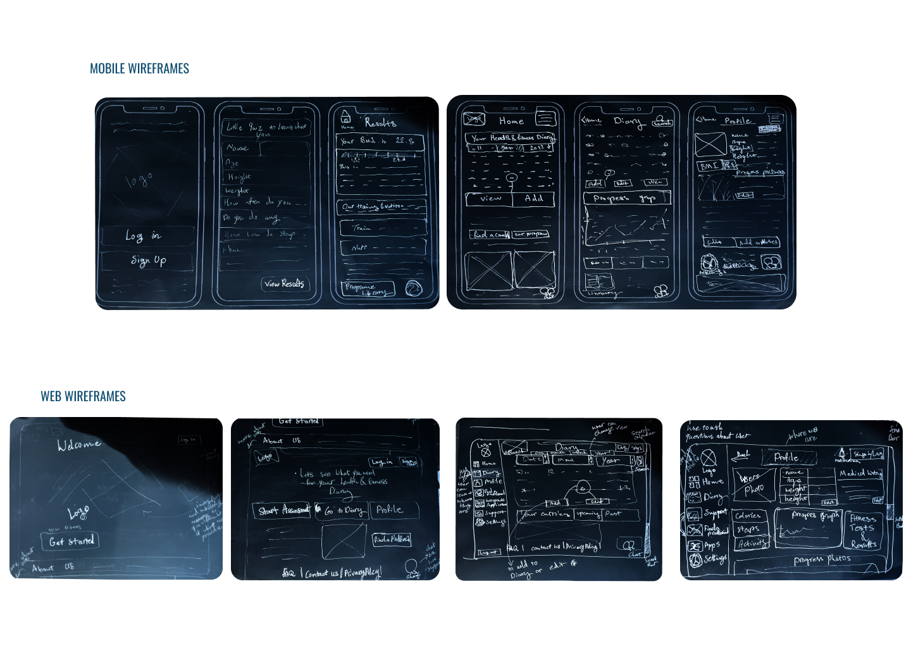
Hand-drawn sketches — exploring mobile and web layouts in parallel
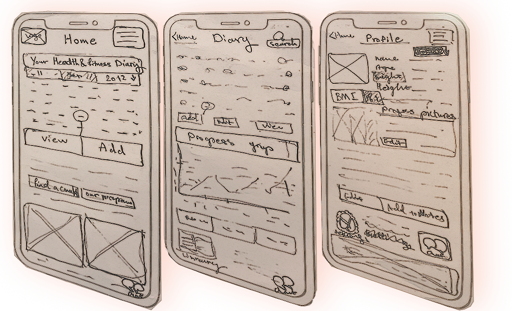
Paper prototype — testing the onboarding concept before going digital
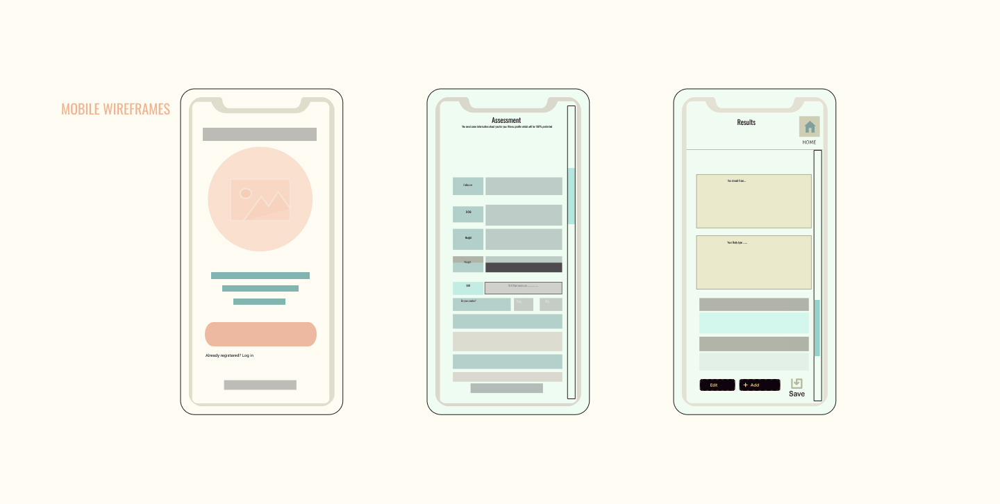
Digital lo-fi wireframes — mobile screens
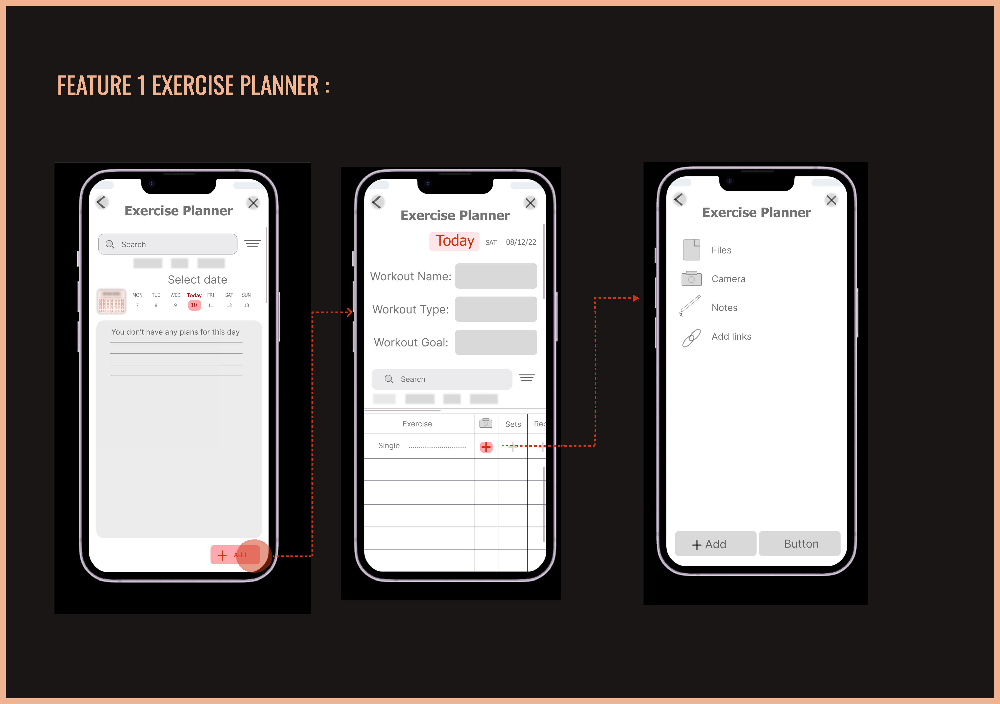
Mid-fidelity — Feature 1: Exercise Planner
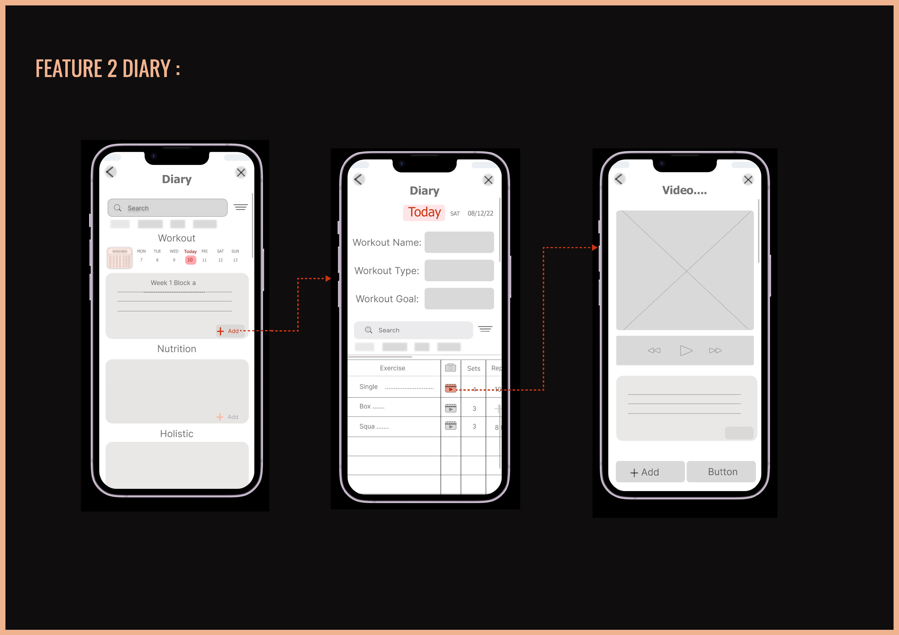
Mid-fidelity — Feature 2: Diary
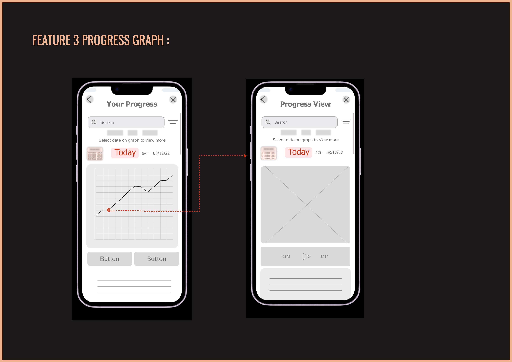
Mid-fidelity — Feature 3: Progress Graph
Three core features were taken from sketch through to hi-fidelity with full interaction flows and a clickable prototype built in Figma.
Calendar-based planner with workout name, type & goal fields, exercise table with sets and reps, and a media modal — attach files, photos, notes or links to any entry.
Personal diary organised into three sections per day: Workout, Nutrition, and Holistic — a genuinely flexible log that goes beyond exercise tracking alone.
Interactive chart: tap any date to drill into a detailed view showing video footage, notes, and biometric data — connecting evidence of effort to tracked results.
Hi-fidelity onboarding — Welcome to FitDiary, Stay on Track, Watch Your Progress
Hi-fidelity designs — all 3 features across the app
FitDiary demonstrates a full end-to-end UX process — from structured research and synthesis, through architecture and ideation, to hi-fidelity design and a clickable prototype.
The swipe onboarding, diary flexibility, and media attachment feature all emerged directly from user research — not assumptions. Parallel mobile/web design ensured genuine responsiveness from day one.
Conduct usability testing on the hi-fi prototype. Take the 'Find a Professional' section to hi-fidelity. Iterate on the Progress Graph based on how users actually want to compare metrics across time.
Every stage documented — from the first interview through to a clickable hi-fi prototype on mobile and web.
Like what you see?
beedesignux@gmail.com →